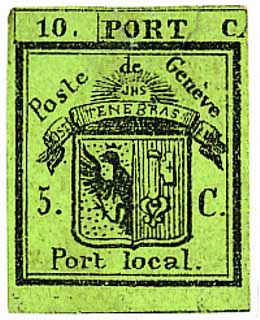
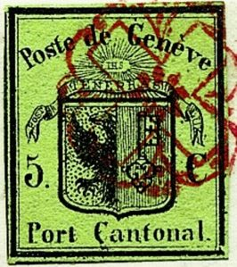
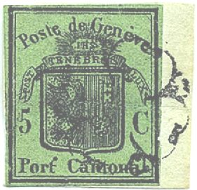

Genf - Genève
Return To Catalogue - Geneva forgeries, part 1 - Geneva forgeries, part 2 - Geneva forgeries, part 3 - Geneva forgeries, part 4 Fournier forgeries of the large stamps - Basel - Neuchatel - Vaud - Winterthur - Zurich - Switzerland overview
Note: on my website many of the
pictures can not be seen! They are of course present in the
catalogue;
contact me if you want to purchase the catalogue.
Many forgeries of these stamps exist. Click here for forgeries of Geneva; these stamps should only be bought expertised.

(Reduced sizes)


5 c black on green
The left and right hand side of this stamp are different in small details. The stamps could be used seperately. Half a stamp was supposed to be enough for a local letter and the whole double stamp could be used for mail to the rest of the Canton. Also combinations of a reversed stamp are known (left stamp on the right and right stamp on the left, only 6 stamps known to exist). The 5 c (half of the stamp) could be used for local letters, the whole stamp (10 c) was used for letters at a greater distance. 6000 double stamps were printed (this stamp is therefore very rare).
Value of the stamps |
|||
vc = very common c = common * = not so common ** = uncommon |
*** = very uncommon R = rare RR = very rare RRR = extremely rare |
||
| Value | Unused | Used | Remarks |
| 5 c + 5 c pair | RRR | RRR | 60,000 pairs were issued |
| 5 c (half) | RRR | RRR | |
For forgeries click here: Geneva forgeries, part 1.



(Small eagle)


Large eagle, on dark green and light green background color

(Front and backside of a certified genuine large eagle stamp)
5 c black on green (so-called small eagle) 5 c black on dark or light green (so-called large eagle)
There should be no crown on top of the eagle's head. In the large eagle design, the eagle's wing touches the frame.
Value of the stamps |
|||
vc = very common c = common * = not so common ** = uncommon |
*** = very uncommon R = rare RR = very rare RRR = extremely rare |
||
| Value | Unused | Used | Remarks |
| 5 c | RRR | RRR | Small eagle; 120,000 stamps issued. |
| 5 c | RRR | RRR | Large eagle; 50,000 stamps issued |
For forgeries, click here: Geneva forgeries, part 2 or Geneva forgeries, part 3 or Geneva forgeries, part 4 Fournier forgeries of the large stamps.
An envelope in the same design was issued in 1845, it is green in colour and the eagle had a crown on its head now (see image above). This envelope cut-out is sometimes used as a stamp. Used envelopes are very rare (about 40 known used), the cut-out is known on about 100 used letters.
Value of the stamps |
|||
vc = very common c = common * = not so common ** = uncommon |
*** = very uncommon R = rare RR = very rare RRR = extremely rare |
||
| Value | Unused | Used | Remarks |
| 5 c cut from envelope | RR | RRR | |
For forgeries, click here: Geneva forgeries, part 2 or Geneva forgeries, part 3 or Geneva forgeries, part 4 Fournier forgeries of the large stamps.
The most common cancel is the 'Geneva Rosette', it exists in several varieties (five), I have mostly seen it in red (the black rozette could only have been used for 17 days in the beginning of 1851). The first Rosette cancel was introduced in 1843, in 1848 the cross and the central flower were eliminated from the cancel.

Type 1; small flowery pattern with 8 petals in the center
Type 2; small flowery pattern with 4 petals in the center
Type 3; Same as type 2, but no flowery pattern in the center.

Type 4; No cross in the center.
Type 5 is like Type 3, but with the cross removed (very rare on Geneva stamps).

(Rosette cancels; type 3, with red date cancel below stamps)
I have also seen the Geneva grid cancel (black):
(Geneva grid cancel)
A grill cancel:

I've also seen a two ring red cancel with 'GENEVE' and 'LG' in a box in red (extremely rare cancel).
Stamps - Briefmarken - Timbres-Poste

{kind=link}
{kind=link}
{kind=link}
{kind=link}